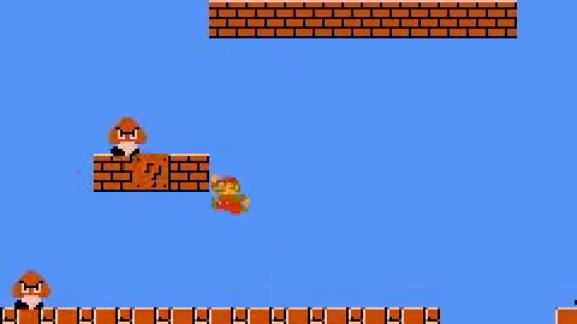
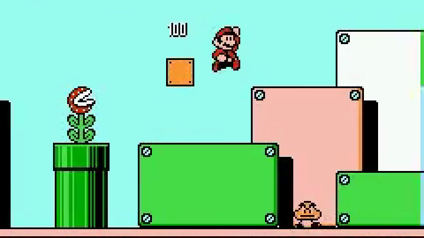

Development games
Three games from the Mario family provide related environments with differences in visual appearance, level design and game mechanics. Shinobi III differs more substantially in its visual content, actions, event structure and behavioral demands.
-

Super Mario Bros.
The first Super Mario game: a side-scrolling platformer in which players navigate obstacles, collect items and avoid or defeat enemies.
22 levels3,374 attemptssub-01, 02, 03, 05, 06
-

Super Mario All-Stars
A visually and acoustically updated version of Super Mario Bros. with its original level layouts.
22 levels1,232 attemptssub-01, 02, 03, 05, 06
Held-out runs for in-distribution testing
-

Super Mario Bros. 3
A new visual style, new environments and additional mechanics, including power-ups that let Mario fly.
80 levels1,589 attemptssub-01, 02, 03, 05, 06
Held-out levels for in-distribution testing
-

Shinobi III: Return of the Ninja Master
An action platformer in which a ninja fights enemies with throwing weapons, close-range attacks and special abilities.
3 levels666 attemptssub-01, 02, 04, 06
Unseen games
The games used for out-of-distribution testing are not part of the development data. Their titles are revealed when the Generalization Phase begins.
About two hours of gameplay per subject will then be released, with the fMRI responses withheld. Performance on these games determines the final ranking.
Subjects
Subject coverage differs across games. Five subjects played the three Mario games and four played Shinobi III. Subject sub-04 only played Shinobi III; it is not evaluated, but its data can be used for training.
| SMB | All-Stars | SMB3 | Shinobi | Role | |
|---|---|---|---|---|---|
| sub-01 | Evaluated | ||||
| sub-02 | Evaluated | ||||
| sub-03 | – | Evaluated | |||
| sub-04 | – | – | – | Training only | |
| sub-05 | – | Evaluated | |||
| sub-06 | Evaluated |
Dataset coverage figureFigure 2 of the paper: hours, levels, attempts, fMRI hours per subject, controller use and level exposure ShowHide

Open full size ↗